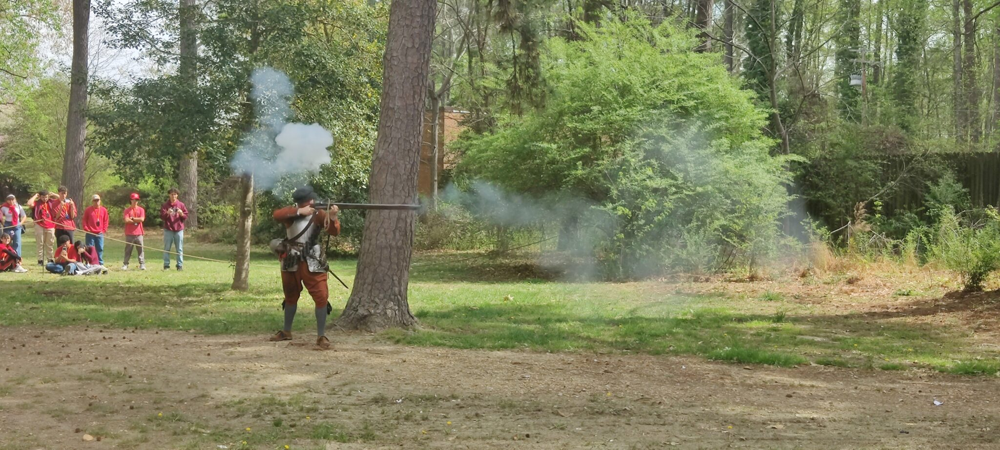
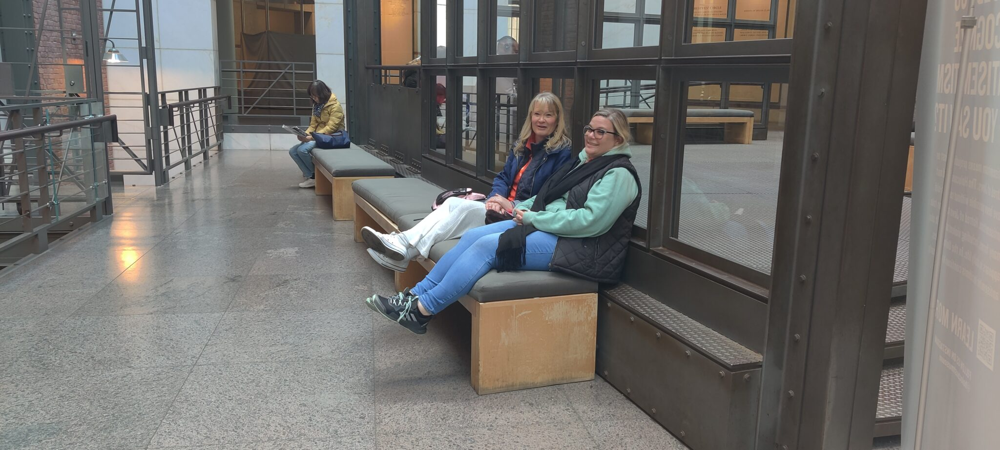

GO See | GO Learn | GO Serve
Empowering students to explore their faith through educational travel.
What is GO Tours?
Our mission is to empower students to explore their faith through educational travel. We deliver experiences that blend learning, adventure, and spiritual development, and we handle every logistical detail to ensure trips are secure and impactful.
Our values
We provide exceptional, faith-focused educational travel experiences for Christian institutions and homeschool organizations. Our tours integrate academics with careful planning, professional guidance, and experienced educators who connect history and faith at each location.
Nathan Lambert
Nathan directed Christian school tours for over 23 years before establishing GO Tours, focusing on academic, social, and spiritual development.
Built by an educator, for educators
After 23 years directing educational journeys, Nathan saw a gap and set out to craft faith-centered, educational travel experiences aligned with each institution’s mission. That is GO Tours.
See
Stand where history happened and experience the world firsthand.
Learn
Connect classroom learning to real-world experience through a biblical worldview.
Serve
Put faith into action with service that changes students and communities.


Have a question?
Our FAQs answer the most common questions from administrators, educators, and families.